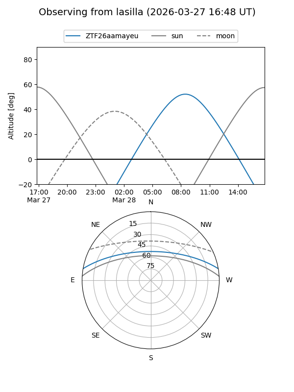
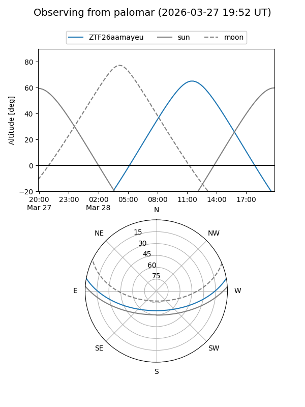

ZTF26aamayeu
Target ZTF26aamayeu at 2026-03-27 14:31
Aliases and brokers:
FINK: link
Lasair: link
ALeRCE: link
alt names
ZTF26aamayeu (ztf,fink_ztf)
Coordinates:
equatorial (ra, dec) = 241.3972,+8.57857
equatorial (HMS+DMS) = 16:05:35.32,+08:34:42.87
galactic (l, b) = (20.3208,+40.59512)
Flags:
Photometry:
last ztfg=16.81
1 ztfg detections
Lightcurve
Visibility


Additional plots